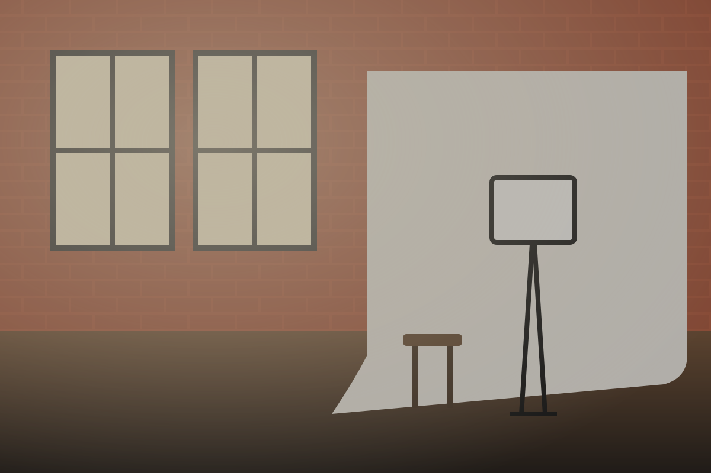

Episode poster
Every phase and state of the episode poster and player, in light and dark. Requirements: video-poster.md.
Variants
Watch the episode

Play episode: Episode 4, The Junction LoftEpisode 4: The Junction Loft — big north light, tiny elevator · 14:32
Watch on YouTube (opens in a new tab)Studio episode, poster on load: The Junction Loft, Episode 4. The heading and the episode links are the application's. AC-1, AC-2, AC-12
Watch the episode
 Play episode: Episode 7, Evergreen Brick Works
Play episode: Episode 7, Evergreen Brick WorksEpisode 7: Evergreen Brick Works at golden hour · 12:48
Watch on YouTube (opens in a new tab)Spot episode: Evergreen Brick Works, Episode 7. Same markup. AC-6
Poster, then player in the same 16:9 slot after activation (the player shown is a stand-in; production loads
https://www.youtube-nocookie.com/embed/Jx7Lq2pT9aE). AC-3, AC-5, AC-10States
Hover, focus and active are forced with data-state (documentation only).
| Part | Default | Hover | Focus | Active | Disabled |
|---|---|---|---|---|---|
| Poster | Never disabled. |
| Part | Playing | Poster failed or null | Loading (slot reserved) | No video |
|---|---|---|---|---|
| Slot | Nothing is rendered: no heading, no poster, no placeholder (Bloordale Sun Studio, Trinity Bellwoods Park). |
Both themes
Play episode: Episode 7, Evergreen Brick WorksEpisode 7: Evergreen Brick Works at golden hour · 12:48
Watch on YouTube (opens in a new tab)Play episode: Episode 7, Evergreen Brick WorksPlay episode: Episode 7, Evergreen Brick WorksEpisode 7: Evergreen Brick Works at golden hour · 12:48
Watch on YouTube (opens in a new tab)Play episode: Episode 7, Evergreen Brick WorksResponsive
Nothing changes by breakpoint: the poster fills the column at 16:9 and the pill keeps its size. The frames prove the 320 px fit, the failed layout on a phone and the zoom case.
Contrast
Play label · --color-fg-on-action on --color-action
Play label, hover · --color-fg-on-action on --color-action-hover
Play label, pressed · --color-fg-on-action on --color-action-active
Failed-poster text · --color-fg-inverse on --color-bg-inverse
Focus ring · --color-focus-ring on --color-bg-canvas
Dark: Play label · --color-fg-on-action on --color-action
Dark: Play label, hover · --color-fg-on-action on --color-action-hover
Dark: Play label, pressed · --color-fg-on-action on --color-action-active
Dark: Failed-poster text · --color-fg-inverse on --color-bg-inverse
Dark: Focus ring · --color-focus-ring on --color-bg-canvas
Tokens
| Part | Token | Light | Dark |
|---|---|---|---|
| Slot ground | --color-bg-inverse | ||
| Failed-poster text | --color-fg-inverse | ||
| Pill fill | --color-action | ||
| Pill fill, hover | --color-action-hover | ||
| Pill fill, pressed | --color-action-active | ||
| Pill label and glyph | --color-fg-on-action | ||
| Focus ring | --color-focus-ring | ||
| Pill height | --control-height-lg | ||
| Pill padding | --space-6 | ||
| Pill shadow | --shadow-3 | ||
| Slot corners | --radius-lg | ||
| Pill corners | --radius-full |
Strings and no-JavaScript
Default label from
st.video.play ("Play episode"), and the same poster with playLabel set by a translation. AC-13Without JavaScript the poster is a plain link to
https://www.youtube.com/watch?v=Ev7Bw3kGh2Q. AC-4Performance
The
video-poster/performance harness route: two posters, the first activated. AC-19